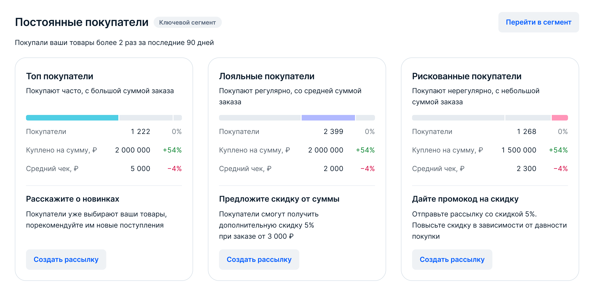

Продакт
Обсуждали цели и гипотезы
Целью было сделать CRM востребованным инструментом работы с покупателями. Я предложила ключевой сегмент и пошаговую настройку коммуникаций, чтобы помочь продавцам перейти от анализа аудитории к действию.
15%
Продавцов используют CRM ежемесячно, в 1,5 раза выше цели
≈1 млн
Покупателей получают сообщения ежедневно, на 25% выше цели
13%
Открываемость сообщений, на 3 п. п. выше цели
Продавец видит показатели каждой группы и рекомендации действий
Раздел объединяет покупателей в группы по их покупкам и интересу к товарам
В MVP вошли готовые сегменты и подсегменты. Создание собственных сегментов оставили за рамками первого запуска
Разработка длилась 6 месяцев от постановки задачи до запуска. Общались всей командой. Нажми, чтобы познакомиться со всеми.
Обсуждали цели и гипотезы

Согласовывали концепты
Продумывали логику

Проводили дизайн ревью

Проводили UX, обсуждали гипотезы

Отстояла сокращение объёма страницы и предложила два решения, которые вошли в MVP
Настояла, чтобы портрет покупателя и аналитика продаж остались в существующих разделах, а в CRM попали только данные для действий
Предложила блок на сводной, который подстраивается под базу продавца и показывает аудиторию, которой нужно внимание в первую очередь
Спроектировала рекомендации под каждый сегмент и два входа в создание рассылки: через сегмент или сразу к последнему шагу
Оценить аудиторию
Выбрать сегмент
Подобрать предложение
Создать коммуникацию
На сводной важно было дать обзор всей покупательской базы, а внутри сегментов показать детали, необходимые для работы с конкретной аудиторией
Показатели нужно было связать с дальнейшими действиями. Поэтому рядом с аналитикой появились рекомендации: какую задачу решать с этой группой покупателей и какое предложение использовать
Сценарий также должен был учитывать продавцов с разным составом аудитории: у одних уже есть постоянные покупатели, у других только первые заказы или интерес к товарам
Страница собралась не сразу. Сначала мы составили список данных о покупателях, которые у нас есть: RFM-сегменты, поведение (корзина, избранное, просмотры), средний чек, демография, регионы, популярные категории. Потом для каждого вида данных решили, что из него нужно продавцу здесь, а что он и так смотрит в других разделах кабинета.
Главной задачей интерфейса стало связать данные о покупателях с дальнейшим действием. На сводной видны постоянные, новые и потенциальные покупатели, их показатели и рекомендации по работе с каждой группой.

Я предложила выделять ключевой сегмент и подробнее раскрывать его на сводной. Так у продавца появляется точка старта: он видит аудиторию, которой стоит уделить внимание, и возможные действия рядом с её показателями.

В CRM можно начать с готового сценария под задачу: удержать постоянных покупателей, мотивировать новых на повторную покупку или расширить аудиторию. Для самостоятельной настройки предусмотрен запуск с нуля.
Чтобы собрать разные механики в понятный процесс, я разделила его на три шага:
Выбрать аудиторию
Использовать акцию, бонусы или рассказать о товарах
Настроить подходящий формат и целевую страницу
За общим сценарием стоят разные ограничения. Обычное сообщение можно отправить не каждой аудитории; у рассылок есть условия подписки и лимит получателей; дата отправки зависит от срока действия акции.
Массовую коммуникацию дополняет список покупателей. В нём собраны покупки, недавние действия, интересы и рекомендованные товары. Продавец может отфильтровать аудиторию и перейти к личному общению, если чат доступен.
Для более глубокого анализа группы в CRM встроен существующий портрет покупателя с работой по сегментам. А виджет на главной кабинета показывает недавний интерес покупателей и предлагает действие — так работа с аудиторией может начаться ещё до входа в раздел.
В списке рассылок продавец видит статус, количество получателей, открытия и переходы. Рекомендации помогают решить, повторить удачную коммуникацию или пересмотреть предложение.
В результате проектирования получился связный CRM-сценарий: понять аудиторию, выбрать действие, настроить коммуникацию и оценить отклик. Мой основной вклад: концепция ключевого сегмента и пошаговая организация настройки, которые задают понятную последовательность работы с продуктом.
15%
Продавцов используют CRM ежемесячно, в 1,5 раза выше цели
≈1 млн
Покупателей получают сообщения ежедневно, на 25% выше цели
13%
Открываемость сообщений, на 3 п. п. выше цели